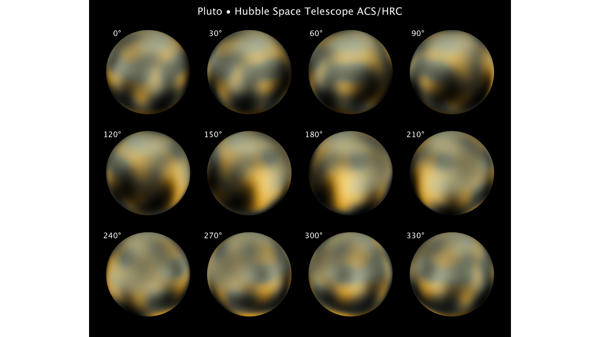

Diffraction limited image of Pluto seen with telescopes of different diameter
Diameter [m]:
Telescope diameter:
m
Real telescopes
primary mirror diameter
Hubble space telescope
2.4 m
Very large telescope
8.2 m
Extremely large telescope
39 m
Real Hubble Space telescope view of Pluto:
